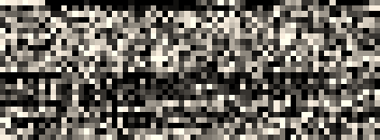

Certificate revocation has been done in two primary ways Certificate Revocation Lists (CRLs) and the Online Certificate Status Protocol (OCSP) at least until some browsers stopped checking for revocation. However, extended validation (EV) certificates still elicit active revocation checking by most browsers.
CRLs are a list of revoked certificate serial numbers from a given certificate authority. Besides the serial number, the revoked certificate list includes the timestamp of the revocation occurrence and the reason the certificate was revoked (though the reason is not always useful in the real world). This poster has only one revoked certificate for brevity, however, if there were others they would be listed serially within the revokedCertificatesList section.
When in normal operation certificate authorities have CRL sizes that can get quite large. After heartbleed the CRL for the main CA used by CloudFlare was nearly five megabytes and used up nearly $400K worth of bandwidth. On the other hand, OCSP is much less weighty when compared to CRLs. Also, OCSP has the ability of being able to be used as a type of whitelist rather than a blacklist like CRL. An OCSP server is able to affirmatively acknowledge that a certificate is valid. With OCSP, you get a simple request and response for only the certificate you are checking rather than a large file which the validator must search through checking every serial revoked by the CA. The OCSP request is built first from the validating side by issuing a request of the OCSP server (specifying that by hashes of the CA name and key) for a particular serial.
The OCSP server will reply back with a response: good, revoked, or unknown. Alternatively, the server can return unauthenticated error codes: malformed request, internal server error, try again later, client signature required, or unauthorized. This response is split into 3 main sections, the wrapper information, the response from the server, the signature, and the chain of the OCSP responder. The server response first contains the responder subject name information, the time the response was signed, and the response. The response is made up of the information from the request, the response (good, revoked [with the time and reason code], or unknown), and the time the response is good from followed by an optional end time for the response.
These methods have largely been replaced by Certificate Trust Lists (CTLs) in Microsoft and CRLSets in Chrome (and soon OneCRL in Firefox >v37. However, these only typically cover emergencies or Issuer/CA certificates. The real solution is short term certificates (certificates only good for a day or two). If that is not feasible, then the solution is requiring servers to staple OCSP responses within the TLS handshake, forcing valid up-to-date revocation information in every connection.
One thing that is noticeably, different, from, previous, posters is that these formats are not encoded in base64, they are binary files. Most of the other files can be interpreted by cryptosystems in both binary and base64, and we typically transport them by first encoding them in base64.
In these formats, in order to show the binary in a visual representation I used Netpbm (Network portable bitmap format) with the PGM (Portable Graymap) format to translate the hexadecimal values into a format easier for humans to visualize. (A more fun format would be to use emoji, but that would not fit quite as well with the rest of the poster).
vs
Microsoft came up with the pfx format (which was later changed slightly and reworked as PKCS #12), and recieved much criticism due to the complex nature, terminology, and internal formats. At first glance the p12 format seems to be fairly complex, it includes many wrappers of wrappers that enclose keys, certificates, and descriptive data. The reason for all of those is that pfx files can contain (according to Gutmann), "CRL's, keys, names, cookie recipes, dirty laundry, spare lightbulbs, and the kitchen sink". However, for storing certificates and a private key in pfx, it is really just a list of pairs of encrypted certificate chain and the associated encrypted key.
The keys and certificates in the pfx are stored in separate containers and encrypted with different keys and most of the time different algorithms also.
When using Windows, there really is no way around the algorithm used. The default is to encrypt the certificates with RC2 and the private key with 3DES, this means that the highest strength you would ever be able to achieve is equivalent to 3DES. However, on OpenSSL, you can specify the encryption algorithm for both the key and the certificates to use the stronger AES-256 by adding additional flags: -certpbe AES-256-CBC -keypbe AES-256-CBC
Of course, at the moment, the strength is predominantly up to the password used as the best way to defeat even the Windows version is to use a password list. This is somewhat slowed by the number of rounds the key derivation algorithm is passed through; 2000 on pfx files generated via Windows and 2048 by default from OpenSSL.
Java has its own proprietary format that it named JKS, which stands for Java KeyStore.
While the p12 format is binary encoded ASN.1, jks format files are a strange mix of binary and ASN.1. The file begins with a "magic number" as many other binary files do. After that comes a list of different keys or certificates. JKS files are also quite extensible and are able to hold many objects, including lists of chains, certificates, roots, as well as lone private keys. The number of keystore entries is defined at the beginning of the file and the data is listed in a serialized manner. For this example of just an x.509 certificate and key, the entry contains: a plaintext alias, encrypted private key, and plaintext chain.
Unlike pkcs12, you cannot choose the algorithm used to protect the keys, so everyone is stuck with a proprietary implementation of a password based key derivation scheme using MD5 to create a 3DES key.
The moral of the story, is use a long and complex password for either of these formats. Even so, if your keystore does get out, you will need to revoke your certificate. More on that next post.
Certificates used in webservers and other end-entity uses are signed by issuers (which should not be root CAs, but it is possible). However, there are a lot of issuer certificates; in 2010 there were nearly 1500, now certainly more are out there with more planned. Because there are so many undistributed issuing CAs, there needs to be a way for the CA to send the issuer cert to the cert requester along with the end-entity certificate so they can pass that along to anyone that needs to validate their root. One of the common ways to pass public keys for a specific chain is the PKCS #7 format. This format is a way to ensure that the right certificates are used in the chain for the particular server certificate.
PKCS #7 begins, as all the others have, with a sequence of the encoded data and length. Immediately following is the OID for PKCS #7 signedData content type. This specifies the type of the content of the p7 object. The content is put into an explicit object that contains a sequence which wraps the object. Inside, the signedData object the structure begins with a version, digest algorithm identifies (empty here), a content info (here specifying the OID for PKCS #7 data), certificates, crls (empty here), and lastly another empty field that can hold additional information on signers.
The certificates field is an ASN.1 explicit type wrapper which contains x.509 sequences as they appear in the x.509 posters from part 4.
After the certificate authority (CA) receives the CSR, it signs it, then sends back the TLS cert. You can see two places in this certificate that directly correspond to the CSR (the public key and the DN). There are three main sections within the certificate wrapper: the tbsCertificate data (tbs = to-be-signed), the structure the specifying signature used to sign the cert, and the signature value. The CA crafts the tbsCertificate from the data given in the CSR, adding additional fields before copying the DN and SPKI (subject public key info; aka the PKCS#1 object).
The tbsCertificate starts out with a version container with a version byte, and as with all of the valid TLS certs trusted on the Internet right now, is version 3 (notice the value of 2 on the left due to the 0-based version index). Next the serial number of the cert which because this is an example is shortened, normally it will be at least 20 random bits. The next field is byte for byte the same as the certificate's signature algorithm ID mentioned above. Following that, the name of the CA that signed the cert goes to the issuer section. The CA's DN sequence is copied to the issuer field of any certificates it signs. The CA also controls the validity dates, the UTC time elements are normally set with the start as the current time, or current GMT date at midnight, with the end date set to a max of 3 years and 3 months (or for extended validation (EV) certs 2 years and 3 months). However, they can be set to nearly any date in the future or in the past. Finally, the DN and SPKI are copied from the CSR and tacked on to the end.
Up until now, all of the fields are in x.509v1 certificates, the difference between version 1 and version 3 certificates are that v3 includes the extensions section below the SPKI. Extensions allow for, as the word implies, extensibility. You can have as many or as few extensions as are required, they can be marked critical or noncritical. A critical extension must be understood by the validating software, otherwise the certificate validation must fail. There are rules set by the CA / Browser Forum for which extensions are required for inclusion and which to mark as critical. In this example, (which only follows some of the rules) there is an extension requiring the certificate to be an end-entity (that is not a CA) as well as the AKI (authority key identifier). An AKI is a way to tie a specified end-entity certificate to the certificate that issued it.
Lastly, the specified signature algorithm uses the CA's private key to sign the bytes from the tbsCertificate, the result is the signature value.
If you missed the previous posts, you may want to read them first (Part One, Part Two)
This first part is a building block for more wonderful things to come. The Distinguished Name for x.500 are the basis for identity and trust on the Internet. You may notice that the base64 in the upper left is a certificate request, I highlighted the bytes to pull out of that to show this detailed view in order to clarify this more complex block. Each of the names in the that make up the distinguished name are an ASN.1 'set' containing a 'sequence' of the attribute type and the value of the attribute. The attribute type is an OID (Object IDentifier), a hierarchical structure used to describe namespaces. All of the OIDs here are under the x.500 attribute types namespace. Second within the set, after the OID, is the value associated to it: country, state, local, et seq. This is encoded in the UTF-8 (Universal Character Set + Transformation Format).
The base64 in the top left of this next poster is the same as the last, however, as the last focused on the DN, this focuses on most of the rest. I say most because the sequence immediately following the DN is a PKCS#1 object. This is the same thing I went over at the end of part one.
CSRs are sent to a certificate authority which they then use to produce a signed certificate for use in TLS to secure websites, or any number of other x.509/PKI applications.
The entire CSR is contained in one large sequence. Within that is a sequence of request data followed by the CSR signature algorithm and lastly the signature value.
The request data is made up of a version (value of 0, meaning of 1; remember computer scientists count from 0...), the DN above (which specifies the request identification information), after that is the PKCS#1 object (identical to the PKCS#1 public key poster). Lastly is the attributes section, here it is empty. The attributes are defined in a PKCS#9 objects. This field is little used now, but at one point it was used to add passwords that the requestor would have to provide at the time of revocation to authenticate to the revocation system.
If you missed the previous post, you may want to read that first (Part One)
The previous post shows one way to store private keys, the PKCS#1 format. This post shows a different format, PKCS#8. This format is more extensible, allowing for more than just the one type of key to be stored. This format splits up the private key representation into three sections: a version, an algorithm identifier, and the actual private key. The version is set at 0, and may eventually change if there are any updates to the standard. The algorithm ID is an OID defined as "RSA Encryption" for use with the PKCS#1 standard. That is to say, the very same standard we went over in the previous post. The last part is a wrapper for the PKCS#1 private key object. This is the exact same thing byte for byte as the PKCS#1 private key.
Unprotected private keys like that are not the best thing to keep laying around, luckily, there's another version of the PKCS#8 which holds an encrypted version of the private key. This format is broken into two pieces, an encryption algorithm and the encrypted data. The encryption algorithm starts with the algorithm identifier for the Password Based Encryption Scheme. The next section is a container for the parameters and data needed to derive the encryption key. For this example I chose to use the Password Based Encryption Scheme #2 (better known as PBKDF2). Fed into the BPKDF2 are the salt, the number of times to run the pseudorandom function over the passphrase used to encrypt the key. Next is the encryption scheme, AES-256-CBC and the initialization vector for the AES algorithm. The key resulting from the PBKDF2 and the salt are fed in as parameters to the AES function along with the message found in the encrypted data section. The result of the decryption is a BER (Basic Encoding Rules) encoded octet string. An octet string you may recognize from above (hint: it's the private key sequence).
Also, please note, AES is not the default algorithm for encrypting keys in openssl. The less secure, 3DES is the default, for openssl you must specify '-aes256' on the commandline to the genrsa or rsa command line applications.
To better understand the ins and outs of TLS certificates and the way they are stored in files, I decided to do a short series on the different PKCS (Public Key Cryptography Standards) that dissects each individual byte of the certificate or key file. This is part one which covers the public and private keys stored in the PKCS #1 format.
The core and heart of a certificate are keys. Certificates utilize both public and private keys which are mathematically bound. The PKCS #1 standard includes both public and private key formats. The first step is to create the private key. Here is the way it's represented: on the top left - the binary file encoded in base64 (easiest for emailing or copy-pasting), below that - expanded into binary, and on the right - each byte expanded into what it means.
The p and q are two random primes, e is an exponent used as part of the math, the value of e is typically the same across all certs. All of the other values are calculated based off of p, q, e and specific mathematical functions. n is the result of multiplying p and q, d is equal to e-1 % (n - (p + q -1)), all the other formulas are noted on the chart. The calculated values are all used extensively during crypto operations and are stored in the file to make those crypto operations faster.
The public key, as stored in the PKCS#1 format starts off with a wrapper of two main sections, a descriptor of the algorithm and second, the bits in the public key. The descriptor holds the OID (Object IDentifier) of the encryption algorithm for which this key is to be used. The key includes same values that may look familiar: n and e, the multiplied primes used as the modulus and the exponent the message to encrypt is raised to the power of when encrypting.
Certificates are typically authenticated via a chain of signatures that lead back to any one of a number of trusted roots. DNSSEC is validated much the same way, however, with DNSSEC there's only one root for delegating authority for the DNS while in certificates, any certificate authority can sign a certificate valid for any domain. There is a way to use this delegated system to verify connections made over TLS called DANE. In short, DANE is a way to use the DNSSEC to get signed records from an authoritative source to validate certificates used in TLS. You can see a great introduction to DANE by the working group co-chair here: https://www.youtube.com/watch?v=emDxUQl1NvA Also, some recent slides from a presentation by Dan York are here: http://www.slideshare.net/Deploy360/3-dnssec-and-dane-ion-tokyo.
In all things there is risk, there are ways to mitigate risk using controls, some are detective controls (CT) some are preventative (DANE, Public Key Pinning). Other's have developed many different ideas in how to ensure that the certificate that makes it to the client's browser is the one which the site owner intended. Some have done analysis of the different methods [Ralph Holz][Ben Laurie][Matt Weeks]. A SecurityWeek article today even positions CT as a replacement for the preventive controls of TACK and DANE. I like certificate transparency (CT) as a way to detect CA compromise, but that is only after the fact (somthing I think that is not quite pointed out in the comparison chart at certificate-transparency.org or in Ben's ACM article from above). However, for a real-time preventitive control, I prefer DANE.
Currently the adoption of DANE is lacking in browsers. The draft I wrote is to allow particular sites to declare themselves as ready to support DANE so that they can further lock down the security of their TLS connections. The method is to use an HTTP "Dane-Validation-Assertion" header or HDVA. I envision this as working as follows: A site sends the DVA header to a browser that tells the browser the browser will then do a lookup over DNSSEC for a TLSA (DANE) record to perform additional validations on the certificate.
Options for this header include the max time to keep/remember the assertion, a way to include subdomains, and a way to require a valid DANE response before continuing. The max-age and include-subdomains are used in the same manner as HTTP Strict Transport Security (HSTS) and HTTP Public Key Pinning (HPKP), the 'require' however, is a concept specific HDVA. The reason I included this directive was because the way DANE works; if you receive a certificate that is valid through the regular means of validating using certificate authorities (PKIX) and do not receive any DANE records, the connection will continue. By using the 'require' directive, the server operator forces the connection to be validated using the traditional method of CAs accompanied by DANE or solely by using DANE.
This relates to a TLS certificate validation vulnerability in the clients accessing iCloud affecting bookmarks, calendar, tasks, and possibly other data types allowing for modification and disclosure of data.
Exposure of sensitive reminders, meetings, bookmarks (including bookmarklets that could allow logins to other saved websites). Users may store sensitive data within these data objects that are synced to iCloud, these are at risk of exposure through this vulnerability.
or, how I was able to get over 2500 certificates for domains that I do not own
Four years ago, in 2010, Kurt Seifried released research on how certificate authorities (CAs) validated hostnames in SSL certificate requests. Colin Keigher followed on by with an actual implementation of that research resulting in his finding of five email providers that allowed the registering of addresses, which effectively allowed him to garner certificates for those domains.
I found that this avenue for procuring certificates still exists in at least two mail providers, which means that I was able to get upwards of 2,500 certificates for various domains that I do not own.
The security feature in question is one that I have talked about before: HTTP Public Key Pinning (HPKP). This feature allows a website to tell the browser only to connect to the site if it is using a particular set of SSL certificates. For example, a site can specify that the browser only use a particular CA (certificate authority) or set of CAs when communicating with its servers.